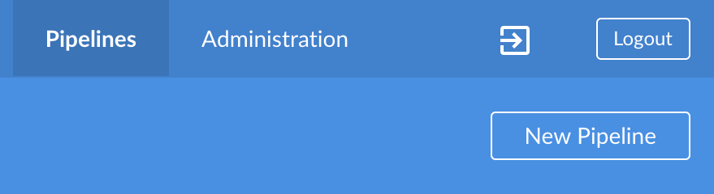
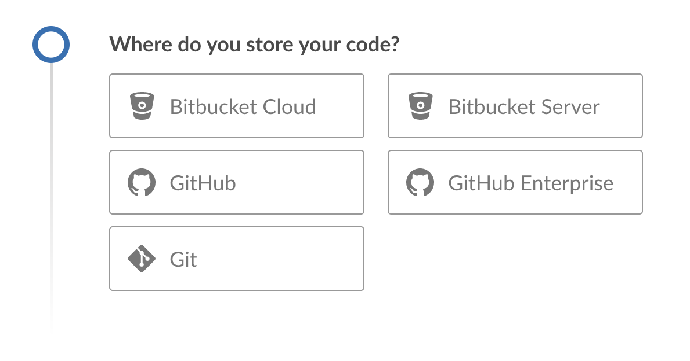
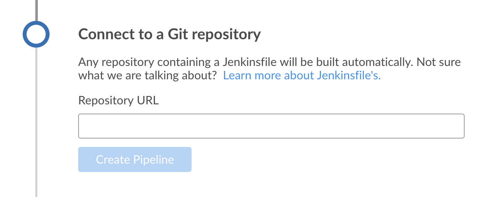
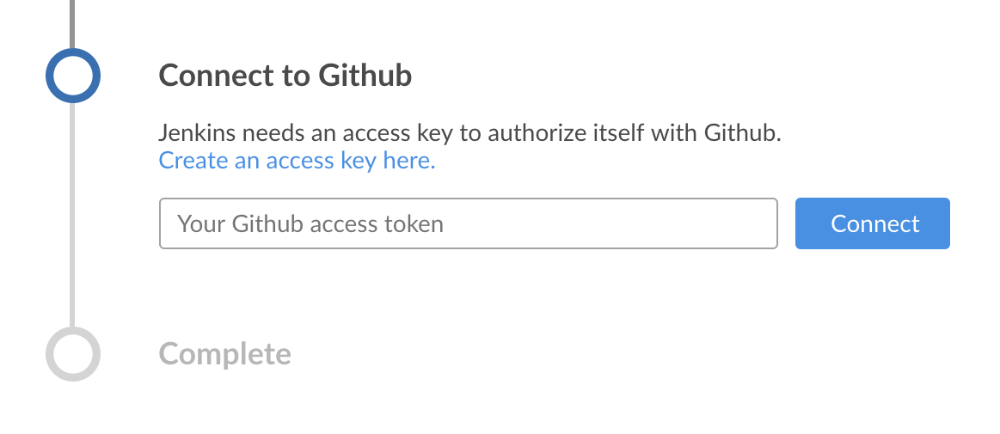
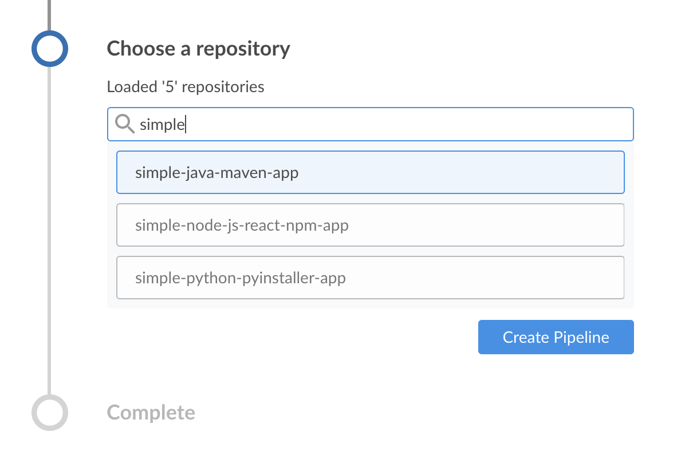
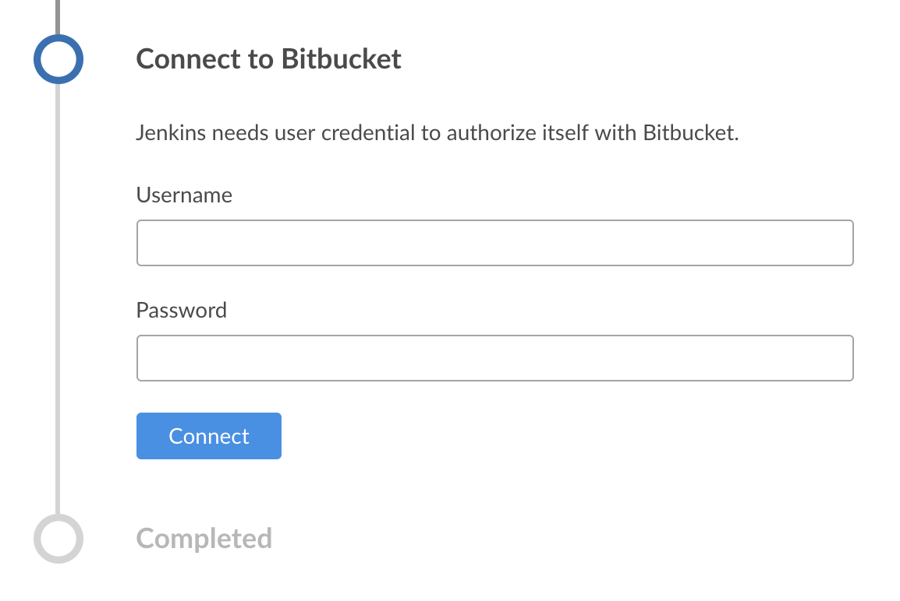

Creating a Pipeline
Blue Ocean makes it easy to create a Pipeline project in Jenkins.
You can generate a Pipeline from an existing Jenkinsfile in source control, or you can use the Blue Ocean Pipeline editor to create a Pipeline as a Jenkinsfile that is committed to source control.
|
Blue Ocean status
Blue Ocean will not receive further functionality updates. Blue Ocean will continue to provide easy-to-use Pipeline visualization, but it will not be enhanced further. It will only receive selective updates for significant security issues or functional defects. Alternative options for Pipeline visualization, such as the Pipeline: Stage View and Pipeline Graph View plugins, are available and offer some of the same functionality. While not complete replacements for Blue Ocean, contributions are encouraged from the community for continued development of these plugins. The Pipeline syntax snippet generator assists users as they define Pipeline steps with their arguments. It is the preferred tool for Jenkins Pipeline creation, as it provides online help for the Pipeline steps available in your Jenkins controller. It uses the plugins installed on your Jenkins controller to generate the Pipeline syntax. Refer to the Pipeline steps reference page for information on all available Pipeline steps. |
Setting up your Pipeline project
To start setting up your Pipeline project in Blue Ocean, select the New Pipeline button at the top-right of the Blue Ocean Dashboard.

If your Jenkins instance is new or has no Pipeline projects or other items configured, Blue Ocean displays a Welcome to Jenkins message that allows you to select the Create a new Pipeline option to start setting up your Pipeline project.

You now have a choice of creating your new Pipeline project from a:
-
Repository on GitHub or GitHub Enterprise
-
Repository on Bitbucket Cloud or Bitbucket Server
For a Git repository
To create your Pipeline project for a Git repository, click the Git button under Where do you store your code?

In the Connect to a Git repository section, enter the URL for your Git repository in the Repository URL field.

Local repository
If your URL is a local directory path beginning with a forward slash /, such as /home/cloned-git-repos/my-git-repo.git, you can proceed to select the Create Pipeline option.
Blue Ocean then scans your local repository’s branches for a Jenkinsfile, and starts a Pipeline run for each branch containing a Jenkinsfile.
If Blue Ocean cannot find a Jenkinsfile, you are prompted to create one through the Pipeline editor.
Local repositories are typically limited to file system access and are normally only available from the controller node. Local repositories are also known to require more complicated path names on Windows than most users want to manage. Users are advised to run jobs on agents, rather than running them directly on the controller. Therefore, you should use a remote repository rather than a local repository for the best Blue Ocean experience.
Remote repository
Since the Pipeline editor saves edited Pipelines to Git repositories as `Jenkinsfile`s, Blue Ocean only supports connections to remote Git repositories over the SSH protocol.
If your URL is for a remote Git repository, be sure your URL starts with either:
-
ssh://- which displays asssh://gituser@git-server-url/git-server-repos-group/my-git-repo.git
or -
user@host:path/to/git/repo.git- which displays asgituser@git-server-url:git-server-repos-group/my-git-repo.git
Blue Ocean automatically generates an SSH public/private key pair or provides you with an existing pair for the current Jenkins user. This credential is automatically registered in Jenkins with the following details for this Jenkins user:
-
Domain:
blueocean-private-key-domain -
ID:
jenkins-generated-ssh-key -
Name:
<jenkins-username> (jenkins-generated-ssh-key)
You must ensure that this SSH public/private key pair is registered with your Git server before continuing.
If you have not already done this, follow these two steps.
-
Configure the SSH public key component of this key pair (which you can copy and paste from the Blue Ocean interface) for the remote Git server’s user account (e.g., within the
authorized_keysfile of the machine’sgituser/.sshdirectory).This process allows your Jenkins user to access the repositories that your Git server’s user account has access to. Refer to the "Setting Up the Server" of the Pro Git documentation. -
Return to the Blue Ocean interface.
Select the Create Pipeline option.
Blue Ocean scans your local repository’s branches for a Jenkinsfile and starts a Pipeline run for each branch containing a Jenkinsfile.
If Blue Ocean does not find a Jenkinsfile you are prompted to create one through the Pipeline editor.
For a repository on GitHub
To create your Pipeline project directly for a repository on GitHub, select the GitHub option under Where do you store your code?.
In the Connect to GitHub section, enter your GitHub access token into the Your GitHub access token field.
If you previously configured Blue Ocean to connect to GitHub using a personal access token, Blue Ocean takes you directly to the
GitHub account/organization and repository choice steps below:

If you do not have a GitHub access token, select the Create an access key here option to open GitHub to the New personal access token page.
Create your access token
-
In the new tab, sign in to your GitHub account. On the New Personal Access Token page, specify a brief Token description for your GitHub access token, such as
Blue Ocean.An access token is usually an alphanumeric string that represents your GitHub account, along with permissions to access various GitHub features and areas through your GitHub account. The new access token process, initiated by selecting Create an access key here, has the appropriate permissions pre-selected that Blue Ocean requires to access and interact with your GitHub account. -
Scroll down to the end of the page, and select Generate token.
-
On the resulting Personal access tokens page, copy your newly generated access token.
-
Back in Blue Ocean, paste the access token into the Your GitHub access token field, and then select Connect.
Your current Jenkins user now has access to your GitHub account and you can now choose your GitHub account/organization and repository. Jenkins registers this credential with the following details for this Jenkins user:
-
Domain:
blueocean-github-domain -
ID:
github -
Name:
<jenkins-username>/****** (GitHub Access Token)
Choose your GitHub account/organization and repository
Blue Ocean prompts you to choose your GitHub account or an organization you are a member of. You are also asked for the repository containing your Pipeline project.
-
In the Which organization does the repository belong to? section, select either:
-
Your GitHub account, to create a Pipeline project for one of your own GitHub repositories or one which you have forked from elsewhere on GitHub.
or -
The organization of which you are a member, to create a Pipeline project for a GitHub repository located within this organization.
-
-
In the Choose a repository section, select the repository within your GitHub account or organization from which to build your Pipeline project.
If your list of repositories is long, you can use the Search option to filter your results.

-
Click Create Pipeline.
Blue Ocean scans your local repository’s branches for a Jenkinsfile and starts a Pipeline run for each branch containing a Jenkinsfile.
If Blue Ocean does not find a Jenkinsfile, you are prompted to create one through the Pipeline editor.
| Under the hood, a Pipeline project created through Blue Ocean is actually a "multibranch Pipeline." Therefore, Jenkins looks for the presence of at least one Jenkinsfile in any branch of your repository. |
For a repository on Bitbucket Cloud
To create your Pipeline project directly for a Git or Mercurial repository on Bitbucket Cloud, select the Bitbucket Cloud button under Where do you store your code?
In the Connect to Bitbucket section, enter your Bitbucket email address and password into the Username and Password fields.
-
If you previously configured Blue Ocean to connect to Bitbucket with your email address and password, Blue Ocean takes you directly to the Bitbucket account/team and repository selection steps below.
-
If you entered these credentials, Jenkins registers them with the following details for this Jenkins user:
-
Domain:
blueocean-bitbucket-cloud-domain -
ID:
bitbucket-cloud -
Name:
+<bitbucket-user@email.address>/ (Bitbucket server credentials)

Select Connect and your current/logged in Jenkins user will now have access to your Bitbucket account. You can now choose your Bitbucket account/team and repository.
Choose your Bitbucket account/team and repository
Blue Ocean prompts you to choose your Bitbucket account or a team you are a member of, as well as the repository containing your project to be built.
-
In the Which team does the repository belong to? section, select either:
-
Your Bitbucket account to create a Pipeline project for one of your own Bitbucket repositories, or one which you have forked from elsewhere on Bitbucket.
-
A team of which you are a member to create a Pipeline project for a Bitbucket repository located within this team.
-
-
In the Choose a repository section, select the repository in your Bitbucket account or team from which to build your Pipeline project.
If your list of repositories is long, you can filter this list using the Search option. -
Click Create Pipeline.
Blue Ocean scans your local repository’s branches for a Jenkinsfile and starts a Pipeline run for each branch containing a Jenkinsfile.
If Blue Ocean does not find a Jenkinsfile, you are prompted to create one through the Pipeline editor.
| Under the hood, a Pipeline project created through Blue Ocean is actually a "multibranch Pipeline." Therefore, Jenkins looks for the presence of at least one Jenkinsfile in any branch of your repository. |
Please submit your feedback about this page through this quick form.
Alternatively, if you don't wish to complete the quick form, you can simply indicate if you found this page helpful?
See existing feedback here.